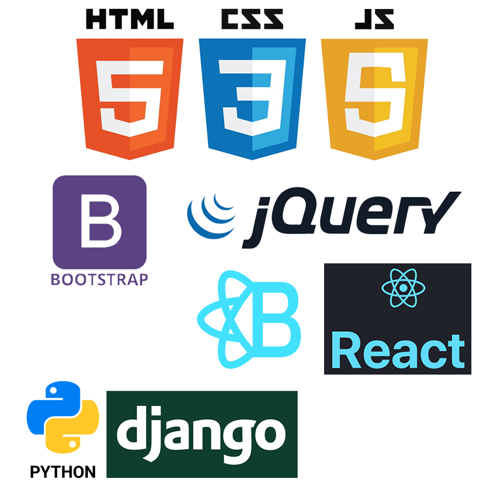
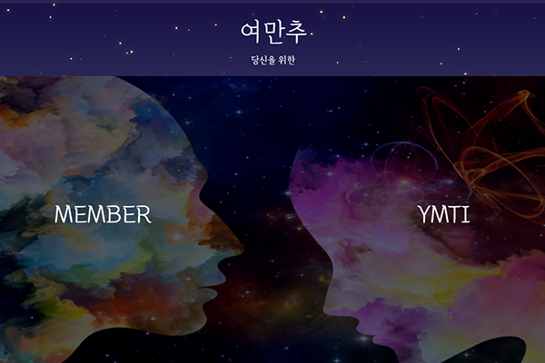
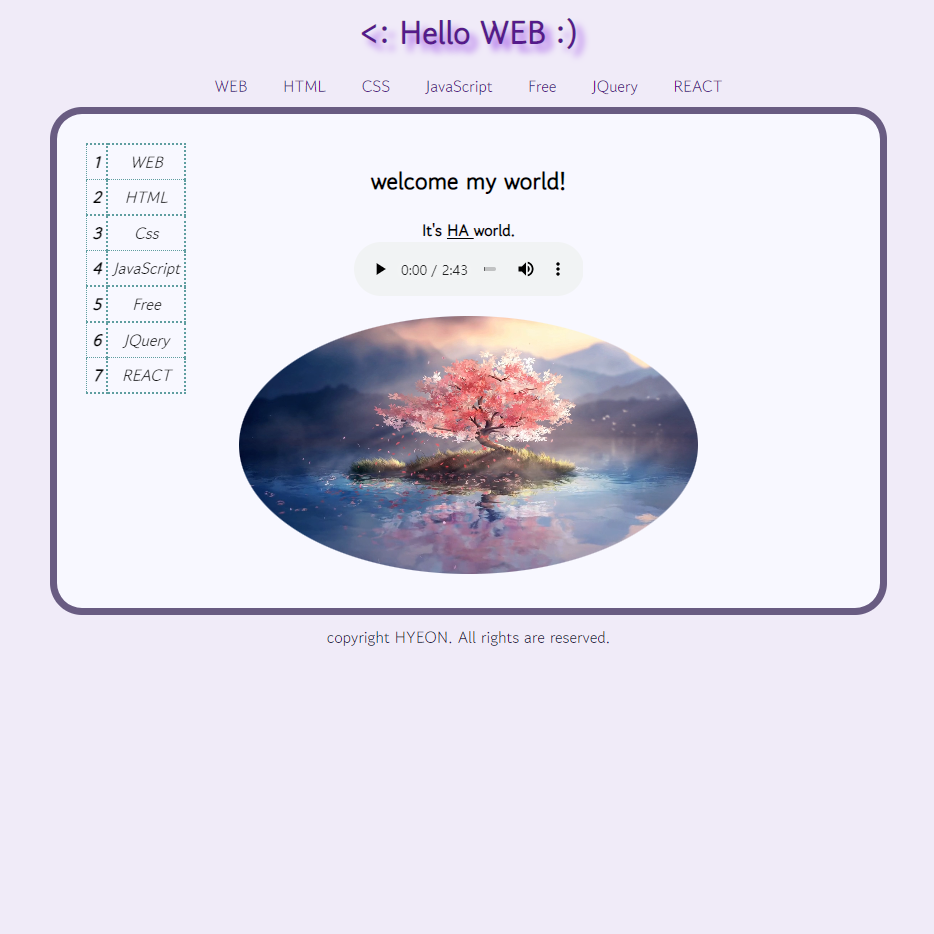

윤현정
Web Publisher
안녕하세요 저는 깔끔하고 견고한 UI와
편안한 UX를 표현하는 신입웹개발자 입니다.
새로운 것을 배우고 다양한 방면으로 활용하는 것을 좋아하고, 각종 대회와 프로젝트 협업 경험을 통해 원활한 소통 능력을 갖추었습니다.
많은 사람들과 대화하며 더 나은 방향을 찾아가고 성실한 자기계발로 성장해나가는 개발자가 되겠습니다. 감사합니다.
-
이름 윤현정
SKILLS
 - 웹표준과 웹접근성을 준수하며 크로스 브라우징, 반응형 레이아웃과 적응형 웹,앱 퍼블리싱이 가능합니다.
- 웹표준과 웹접근성을 준수하며 크로스 브라우징, 반응형 레이아웃과 적응형 웹,앱 퍼블리싱이 가능합니다.- JQUERY와 CSS 애니메이션을 이용한 동적표현을 좋아합니다.

 - Django를 이용하여 데이터 베이스와 인공지능 모델부터 Front까지 연동한 경험이 있습니다.
- Django를 이용하여 데이터 베이스와 인공지능 모델부터 Front까지 연동한 경험이 있습니다.
Tools


 - git을 통한 협업 경험이 있습니다.
- git을 통한 협업 경험이 있습니다.
 - 간단한 피그마툴과 이미지,배경 편집과 ppt제작이 가능합니다.
- 간단한 피그마툴과 이미지,배경 편집과 ppt제작이 가능합니다.

-
우리들의 비밀 이야기
#반응형 #웹 표준 #크로스 브라우징 #가로스크롤 #Modal #인클루드 #다이어리 #1인 프로젝트 개인 다이어리 용도로 만든 웹사이트로 기념일 달력, 일기장, 재생목록, 앨범페이지를 포함하고 있습니다.
웹 표준을 준수하며 반응형으로 제작하였고, 크로스 브라우징으로 개발하여 크롬과 파이어폭스, Edge에서 정상적으로 작동합니다.
Header과 Footer를 분리 후 JQUERY를 통해 INCLUDE하는 방식을 이용하여 유지보수에 용이하게 개발하였습니다.
회원가입과 로그인, 다이어리 작성 등 다양한 폼을 넣었고, JQUEYR로 가로스크롤과 pagination,모달창 구현 및 css애니메이션을 이용하여 동적인 효과를 추가하였습니다.
* SKILLS : HTML, CSS, JavaScript, JQUERY
* URL :https://ha-yun.github.io/DIARY/
* GITHUB :https://github.com/ha-yun/DIARY -
YUN

#반응형 #Bootstrap #Ionicons #AOS #포트폴리오 #1인 프로젝트 포트폴리오 용도로 제작한 웹사이트입니다.
웹 표준을 준수하며 반응형으로 제작하여 모바일과 웹 모든 디바이스에서 호환됩니다.
Bootstrap을 기반으로 carousel, offcanvas를 구현하였고 Ion-icons에서 아이콘을 활용하여 디자인하였습니다.
또한, JQUERY를 통해 Pagination과 SCROLL, AOS Library를 이용한 Scroll animation, CSS 애니메이션을 추가하여 동적인 효과를 주었습니다.
* SKILLS : HTML, CSS, JavaScript, JQUERY
* URL :https://ha-yun.github.io/YUN/
* GITHUB :https://github.com/ha-yun/YUN -
MAMMALIA

#적응형 #모바일 #웹 표준 #웹접근성(skip메뉴) #크로스브라우징 #인클루드 #1인 프로젝트 포유류(개,고양이,토끼,사슴)에 속하는 동물들의 정보가 담긴 백과사전 앱,웹입니다.
웹 표준을 준수하며 HOME SKIP메뉴를 넣어 웹 접근성을 높였고,
Header과 Footer를 분리 후 JQUERY를 통해 INCLUDE하는 방식을 이용하여 유지보수에 용이하게 개발하였습니다.
적응형으로 모바일과 앱 모두 호환되며 크로스 브라우징으로 개발하여 크롬과 파이어폭스, Edge에서 정상적으로 작동합니다.
모바일의 경우 반응형으로 제작하여 모든 디바이스에서 편하게 접속할 수 있습니다.
* SKILLS : HTML, CSS, JavaScript, JQUERY
* URL :https://ha-yun.github.io/Mammalia/
* GITHUB :https://github.com/ha-yun/Mammalia -
OCEAN

#반응형 #Parallax Scrolling #AOS #Modal #바다 #사계절 #1인 프로젝트 사계절을 바다와 함께 느낄 수 있는 웹입니다. 다양한 영상과 사진을 첨부하여 시각효과를 높였고, 사계절에 대한 정보를 영어로 알려줍니다.
웹 표준을 준수하며 반응형으로 제작하여 모바일과 웹 모든 디바이스에서 호환됩니다.
JQUERY로 Parallax Scrolling을 구현하여 계절에 따라 배경이 자연스럽게 바뀌고 배경과 content 사이에 입체감이 느껴지도록 디자인 하였습니다.
페이지 우측에 Modal메뉴창을 넣어 페이지 이동이 편리하고, AOS(Animate ON Scroll library)를 이용하여 컨텐츠 스크롤이 부드럽도록 개발하였습니다.
* SKILLS : HTML, CSS, JavaScript, JQUERY
* URL :https://ha-yun.github.io/Ocean/
* GITHUB :https://github.com/ha-yun/Ocean -
Catch Ketch Sticker

#반응형 #비쥬얼 슬라이드 #아코디언 메뉴 #1인 프로젝트 추상이미지데이터 활용 서비스기획 공모전으로 준비했던 이미지 인식을 통한 캐릭터 생성 커스터마이징 게임 서비스 앱 홍보 페이지입니다.
웹표준을 준수하며 반응형으로 제작하여 모바일과 웹 모든 디바이스에서 호환되도록 개발하였습니다.
JQUERY로 자동전환 슬라이드를 구현하여 앱에 대한 설명을 자연스럽게 하였고, 모바일은 아코디언 메뉴를 이용하여 간편하고 동적인 화면을 구축하였습니다.
* SKILLS : HTML, CSS, JavaScript, JQUERY
* URL :https://ha-yun.github.io/STICKER/
* GITHUB :https://github.com/ha-yun/STICKER -
여만추
#Django #데이트 코스 추천 #4인 프로젝트 (주)여보야가 현재 시행하고 있는 결혼 유형 검사(YMTI) 서비스를 활용하여 기존 서비스에서 발전된 알고리즘으로 3명을 추천하고 회원별로 데이트 코스를 추천해주는 웹페이지 시스템입니다.
CodePen에서 다양한 동적 animation을 불러와 웹페이지에 적절하게 수정-보완하였고, 배경에 그라데이션과 투명도를 적절하게 조합하여 편안한 UX를 구현하였습니다
* SKILLS : HTML, CSS, JavaScript, Django, Python, Numpy, Scikit-learn
* URL :notion.site/ydate
* GITHUB :https://github.com/ha-yun/yeomanchu -
GSWEB
#MagicGrid #Bootstrap #Pinterest #1인 프로젝트 SNS웹페이지
광주인공지능사관학교에서 웹 어플리케이션 수업을 듣고 만든 SNS 웹페이지로 Pinterest처럼 이미지 보드를 정렬하며 자신만의 페이지를 관리할 수 있습니다.
Bootstrap을 기반으로 하여 Layout과 custome을 하였고, 다양한 form을 넣어 개발하였습니다.
* SKILLS : HTML, CSS, JavaScript, Django, Python
* URL :notion.site/gsweb
* GITHUB :https://github.com/ha-yun/GSWEB2 -
HA-WEB
#인클루드 #블로그 #1인 프로젝트 개인 블로그 용도이자 가장 처음으로 만든 웹페이지로 웹을 공부하며 배운 기록과 활용한 내용이 담겨 있습니다.
Header과 Footer를 분리 후 JQUERY를 통해 INCLUDE하는 방식을 이용하여 유지보수에 용이하게 개발하였습니다.
* SKILLS : HTML, CSS, JavaScript, JQUERY
* URL :https://ha-yun.github.io/ha-WEB/
* GITHUB :https://github.com/ha-yun/ha-WEB
학력
경상대학교 식물의학
2017.03 - 2023.02(예정)
대덕고등학교
2014.03 ~ 2017.02
교육 및 활동
[교육] 광주 인공지능 사관학교 2기 수료
- 웹 애플리케이션, 알고리즘, 딥러닝, 머신러닝, 빅데이터 분석 교육 이수
2021.06~ 2021.12
[기업 프로젝트] (주)여보야와 기업 프로젝트 진행
- 여보야의 회원 매칭 및 데이트 코스 추천 서비스 개발
2021.10~2021.11
수상
2021 영상 및 이미지 편집기술 인공지능 학습데이터 해커톤 은상
- 한국과학기술원
2021.12
2021 해무,안개 CCTV 데이터 해커톤 우수상
- UST21 컨소시엄
2021.12
2021 인공지능 학습용 데이터 활용 해커톤 경진대회(복지 분야 콜센터 상담 데이터) 최우수상
- NIA한국지능정보사회진흥원
2021.09~11
(광양시)재활용품 자동수거기 설치를 위한 최적 위치 선정 입선
- LH한국토지주택공사
2021.07~2021.08